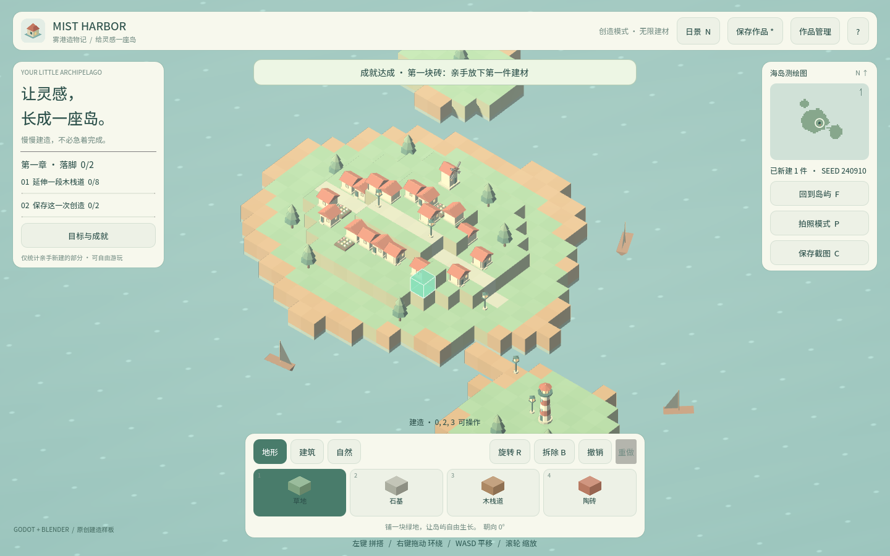
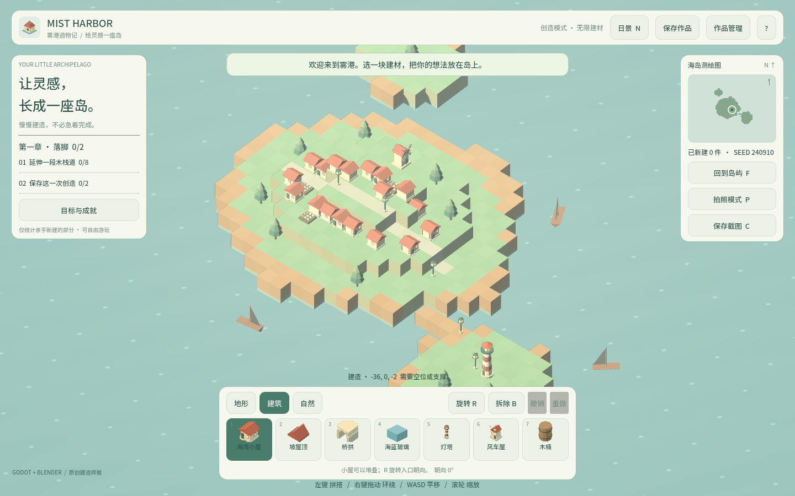

卷 3 · 第 18 章 风格统一：配色、比例与密度
本章目标：把"看起来协调"拆成三条可执行的规则——
配色有主次、比例有基准、密度有上限。这样新增资产时才不会风格漂移。
对应任务：T28–T32（观感） | 对应文件：data/palette.json、project/docs/requirements.md
18.1 配色：一个暖色家族 + 一个冷色点缀
把 14 项建材的颜色摊开看：
| 类别 | 色值 | 感觉 |
|---|---|---|
| --- | --- | --- |
| 地形（5） | 8ab18c 草地 / b9bcad 岩石 / bb946c 木栈道 / c8856b 砖 / 82bcc2 玻璃 | 低饱和、偏灰的自然色 |
| 建筑（6） | d1826b 小屋 / c67360 屋顶 / d4cfb8 桥拱 / d08067 灯塔 / dbbca0 风车 / b07d4f 木桶 | 暖砖红—赭石家族 |
| 自然（3） | 73a38b 乔木 / eac989 暖光灯 / d9aeae 花丛 | 绿 + 两个暖亮点 |
三条规则：
- 主色家族统一：建筑类全在暖赭石—砖红区间（
b07d4f→dbbca0），不出现纯饱和色 - 点缀只有一个冷色：
82bcc2（玻璃）是全表唯一的冷色，正因为少，它才显眼 - 饱和度压低：没有
#ff0000式的纯色，全部带灰——低饱和让大量方块堆叠时不刺眼
📌 这个配色的效果是：远看是一片和谐的暖灰海岛，近看有明确的材质区分。
18.2 比例：1 格 = 1 米，是全部比例的锚
1 格 = 1 m → 单格道具宽 ≤ 1 m
高体道具底座收窄（lamp 0.42 m / beacon 0.86 m）
建筑高度 1–3 格（小屋 1、风车 2、灯塔 3）| 比例决策 | 理由 |
|---|---|
| --- | --- |
| 道具略小于1 m（cottage 1.03 是例外，因为它要"贴满"一格） | 留缝隙 → 堆叠时有轮廓感 |
| 高体底座收窄 | 占 2–3 格时不会显得像一根柱子 |
| 相机等距角固定 0.72/0.72 | 所有比例判断都在同一视角下进行（第 11 章） |
验证方法：把新资产放进去，跟小屋并排看——如果它显得"太胖"或"太细"，
问题一定在宽度/底座，而不是高度。
18.3 密度：上限、起始量与视觉噪声
| 约束 | 值 | 来源 |
|---|---|---|
| --- | --- | --- |
| 建材上限 | 12,000 原点 | requirements.md |
| 世界范围 | ±25（相机钳制 ±23） | 同上 |
| 起始村庄 | 固定 seed 240910 生成 | manifest / village.reset(240910, true) |
| 存档上限 | ≤ 4 MB | requirements.md |
密度设计的两条经验：
- 起始村庄给"参照物"：玩家一进来就有房子、树、灯塔，立刻理解比例与风格
- 地形用顶点色扰动：
build_world.gd按坐标 hash 做 ±0.07 亮度变化（第 10 章）
→ 大片同色地形不死板，等价于"用代码代替贴图"
📌 第 3 条经验：密度靠"变化"而非"数量"。同样 100 块石头，
有亮度扰动看起来就自然得多。
18.4 新增资产时的风格检查清单
□ 颜色在既有家族内？（建筑：暖赭石；自然：绿/暖亮；地形：低饱和）
□ 是否引入了第二个冷色？（如果是，说明玻璃的点缀地位被稀释）
□ 宽度 ≤ 1 m（单格）或底座收窄（高体）？
□ 高度 ceil 后占位合理？跟同类并排看是否协调？
□ 面数 ≤ 1500、体积在同类中不突兀？（第 17 章）
□ 放进游戏截图对比：跟小屋/树并排是否"像一家人"？🌩 在云端 agent（web-cb）里是什么样
| 🖥 本地路线 | 🌩 云端 agent（web-cb） | |
|---|---|---|
| --- | --- | --- |
| 风格判断 | 人眼看截图 | 同样靠人眼；但可以先机器筛（色相/饱和度/尺寸阈值） |
| 批量产出 | 逐件做 | 云端容易一次造多件 → 更依赖检查清单 |
| 建议 | 每件留预览图 | 云端把预览图 + inspect 报告归档，作为风格评审材料 |
| 风险 | 风格漂移慢 | 云端批量 + 缺少评审 = 风格漂移最快 |
🌩 给云端流水线的具体建议：把上面 6 条清单里的可量化项
（饱和度区间、宽度 ≤1 m、面数 ≤1500）做成自动卡点，只把"是否协调"留给人。
18.5 常见坑速查（本章）
| 现象 | 原因 | 处理 |
|---|---|---|
| --- | --- | --- |
| 新资产显得"不像这个游戏" | 颜色跳出家族 / 饱和度过高 | 压低饱和度，靠拢暖赭石 |
| 玻璃不再显眼 | 又加了别的冷色 | 保持"唯一冷色"原则 |
| 道具显得笨重 | 高体底座没收窄 | 底座收到 ≤0.5 m |
| 大片地形死板 | 没有颜色扰动 | 顶点色 hash 扰动（第 10 章） |
| 玩家一进来空荡荡 | 没有起始参照物 | 保留 seed 固定的起始村庄 |
| 堆叠看不出层次 | 道具宽度贴满一格 | 略小于 1 m，留缝 |
18.6 本章作业
- 说出配色三条规则，并指出全表唯一的冷色是哪个、为什么只允许有一个
- 说明"1 格 = 1 m"如何决定单格道具与高体道具的尺寸策略
- 用风格检查清单评估
barrel（0.61 m 宽 /b07d4f）：逐条给出结论 - 设计一件新资产（例如
crate木箱），给出颜色、尺寸与占位，并说明它如何满足清单
🎓 教学提示（给教师 / 直播主）
- 概念锚点：风格 = 约束的集合，不是"感觉"。能写进清单的才管得住。
- 课堂演示：把一件资产的饱和度拉高 30%，并排截图让学员直观感受"跳"。
- 高频误解：学生追求"每件都好看"。强调：整体协调 > 单件出彩。
- 讨论题：如果游戏要出"雪岛"主题包，配色规则该怎么改？（引出主题化扩展）
- 批改要点：作业 3 要逐条给结论，尤其要点出它宽度 0.61 m 是为了留缝。
🖼 本章图集


📹 录屏分镜（9 分钟）
| 时间 | 画面 | 解说词要点 |
|---|---|---|
| --- | --- | --- |
| 00:00–01:40 | 三类配色摊开 + 三条规则 | "暖色家族，一个冷色点缀。" |
| 01:40–03:00 | 饱和度实验：拉高 30% 并排对比 | "跳出来的那件，就是错的。" |
| 03:00–04:30 | 比例：1 格 = 1 m，高体收窄 | "比例的锚是格子。" |
| 04:30–06:00 | 密度：上限、起始村庄、顶点色扰动 | "密度靠变化，不靠数量。" |
| 06:00–08:00 | 新增资产检查清单逐条过 | |
| 08:00–09:00 | 作业 + 卷 3 小结 |
🎬 本章视频
🖼 配图清单
| 文件名 | 内容 | 生成方式 |
|---|---|---|
| --- | --- | --- |
18-palette-colors.png | 建材栏全部色块（配色家族一目了然） | python tools/course_capture.py --chapter 18 |
18-glass-accent.png | 放置玻璃（唯一冷色点缀的效果） | 同上 |
🎥 直播脚本（L3 片段，12 分钟）
- 开场：A/B 盲测——两版截图（一版饱和度偏高），让观众投票
- 演示：把某件资产的颜色改成跳出家族的值，看整体观感崩塌
- 互动：让观众给自己的项目写三条配色规则
- 收尾：卷 3 总结（脚本 → 远程执行 → 管线 → 预算 → 风格）
❓ 本章 FAQ
Q：能不能用贴图提升质感？
A：本实训刻意走纯色低模路线：体积小、风格统一、无需 UV 与纹理管理。加贴图会破坏这三点。
Q：起始村庄会算进玩家的建造统计吗？
A：不会——测试里明确断言"starter scenery not credited as learner construction"（第 29 章 L1）。
Q：配色能不能玩家自定义？
A：当前是数据驱动的固定表；要做自定义只需让玩家改 palette.json 的 color，架构上已支持。